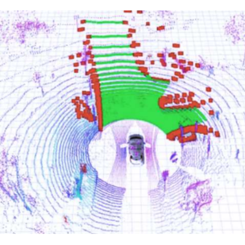
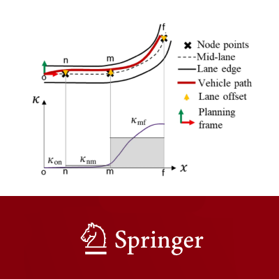
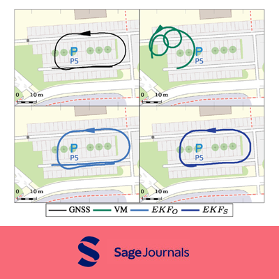
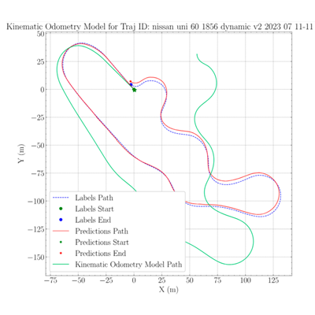

Selected papers with code¶
| . | Paper | Repository and stars |
|---|---|---|
 |
Ernő Horváth, Claudiu Pozna, and Miklós Unger. Real-time lidar-based urban road and sidewalk detection for autonomous vehicles. Sensors, 2022. URL: https://www.mdpi.com/1424-8220/22/1/194, doi:10.3390/s22010194. |  github.com/jkk-research/urban_road_filter |
| Ernő Horváth, Claudiu Pozna, Péter Kőrös, Csaba Hajdu, and Áron Ballagi. Theoretical background and application of multiple goal pursuit trajectory follower. Hungarian Journal of Industry and Chemistry, 48(1):11–17, 2020. |  github.com/jkk-research/wayp_plan_tools |
|
 |
Gergo Ferenc Igneczi, Ernő Horváth, Roland Toth, and Krisztian Nyilas. Curve trajectory model for human preferred path planning of automated vehicles. Automotive Innovation, pages 1–12, 2024. doi:10.1007/s42154-023-00259-8. |  github.com/gfigneczi1/hlb |
 |
Krisztián Enisz, István Szalay, and Ernő Horváth. Localization robustness improvement for an autonomous race car using multiple extended kalman filters. Proceedings of the Institution of Mechanical Engineers, Part D: Journal of Automobile Engineering, 0(0):09544070241266281, 2024. doi:10.1177/09544070241266281. |  github.com/jkk-research/kalman_pos |
 |
Norbert Markó, Ernő Horváth, István Szalay, and Krisztián Enisz. Deep learning-based approach for autonomous vehicle localization: application and experimental analysis. Machines, 2023. URL: https://www.mdpi.com/2075-1702/11/12/1079, doi:10.3390/machines11121079. |  github.com/jkk-research/pos-prediction |
| Rahul Razdan, M. Ilhan Akbas, Suleiman O. Alsweiss, Angela Cheatham, Kenneth Ford, Ernő Horváth, Laxima Niure Kandel, Mohammad Musa, Raivo Sell, and Bálint Tóth. Product assurance in the age of artificial intelligence. Technical Report, SAE International, 2025. URL: https://saemobilus.sae.org/reports/product-assurance-age-artificial-intelligence-epr2025011, doi:10.4271/EPR2025011. | Technical report, no code repository available | |
| Norbert Markó, Zoltán Rózsa, Áron Ballagi, and Tamás Szirányi. Robust road surface normal and pitch estimation via imu-camera fusion. In 22nd International Conference, ACIVS 2025, Tokyo, Japan, July 28–30, 2025, Proceedings, 591–603. Cham, 2026. Springer Nature Switzerland. doi:https://doi.org/10.1007/978-3-032-07343-3_47. |  github.com/norbertmarko/ground-normal-prediction |
|
| Miklós Unger, Ernő Horváth, Dániel Pup, and Claudiu Radu Pozna. Towards robust lidar lane clustering for autonomous vehicle perception in ros 2. In 2024 IEEE International Conference on Mobility, Operations, Services and Technologies (MOST), volume, 229–234. 2024. doi:10.1109/MOST60774.2024.00031. |  github.com/jkk-research/lidar_cluster_ros2 |
Bibliography¶
The list is generated from the refs.bib file.
Miklós Unger and Ernő Horváth. Robust lidar-based parking slot detection and pose estimation for shell eco-marathon vehicles. In Proceedings of the 22nd International Conference on Informatics in Control, Automation and Robotics - Volume 1: ICINCO, 486–493. INSTICC, SciTePress, 2025. doi:10.5220/0013772900003982.
Norbert Markó, Zoltán Rózsa, Áron Ballagi, and Tamás Szirányi. Robust road surface normal and pitch estimation via imu-camera fusion. In 22nd International Conference, ACIVS 2025, Tokyo, Japan, July 28–30, 2025, Proceedings, 591–603. Cham, 2026. Springer Nature Switzerland. doi:https://doi.org/10.1007/978-3-032-07343-3_47.
Barham Jeries Barham Farraj, Abdelrahman Alabdallah, Miklós Unger, and Ernő Horváth. Enhancing autonomous navigation: real-time lidar detection of roads and sidewalks in ros 2. Engineering Proceedings, 2025. URL: https://www.mdpi.com/2673-4591/113/1/24, doi:10.3390/engproc2025113024.
Abdelrahman Alabdallah, Barham Jeries Barham Farraj, and Ernő Horváth. Ros 2-based framework for semi-automatic vector map creation in autonomous driving systems. Engineering Proceedings, 2025. URL: https://www.mdpi.com/2673-4591/113/1/13, doi:10.3390/engproc2025113013.
Gergo Igneczi, Tamas Dobay, Erno Horvath, and Krisztian Nyilas. Driver clustering based on individual curve path selection preference. Applied Sciences, 2025. URL: https://www.mdpi.com/2076-3417/15/14/7718, doi:10.3390/app15147718.
Bence Jekl, Mihály Kopasz, Zoltán Antal, Balázs Németh, Péter Gáspár, Dániel Pup, and Ernő Horváth. Implementation of automated control on test vehicle for safe motion in roundabouts. In Proceedings of the 2nd Conference on Sustainability (COS 2024), 160–166. Győr, Hungary, 2025. Széchenyi István Egyetem. URL: https://eprints.sztaki.hu/id/eprint/10942, doi:10.62897/COS2024.2-1.160.
Rahul Razdan, M. Ilhan Akbas, Suleiman O. Alsweiss, Angela Cheatham, Kenneth Ford, Ernő Horváth, Laxima Niure Kandel, Mohammad Musa, Raivo Sell, and Bálint Tóth. Product assurance in the age of artificial intelligence. Technical Report, SAE International, 2025. URL: https://saemobilus.sae.org/reports/product-assurance-age-artificial-intelligence-epr2025011, doi:10.4271/EPR2025011.
Gergő Ferenc Ignéczi, Ernő Horváth, and Attila Borsos. Analysis of drivers' path follow behaviour. In ICINCO 2024, volume 2, 93 – 100. 2024. URL: https://www.scopus.com/inward/record.uri?eid=2-s2.0-105002145066&doi=10.5220%2f0012889100003822&partnerID=40&md5=b1da939e5a1612aea385e17d8be45ff1, doi:10.5220/0012889100003822.
Ahmed Oultiligh, Hassan Ayad, Abdeljalil EL Kari, Mostafa Mjahed, Nada EL Gmili, Ernő Horváth, and Claudiu Pozna. An improved ieho super-twisting sliding mode control algorithm for trajectory tracking of a mobile robot. Studies in Informatics and Control, 33(1):49 – 60, 2024. URL: https://www.scopus.com/inward/record.uri?eid=2-s2.0-85191085370&doi=10.24846%2fv33i1y202405&partnerID=40&md5=1bd6620d6d1a80394b7dc80a59e9487b, doi:10.24846/v33i1y202405.
Krisztián Enisz, István Szalay, and Ernő Horváth. Localization robustness improvement for an autonomous race car using multiple extended kalman filters. Proceedings of the Institution of Mechanical Engineers, Part D: Journal of Automobile Engineering, 0(0):09544070241266281, 2024. doi:10.1177/09544070241266281.
Miklós Unger, Ernő Horváth, Dániel Pup, and Claudiu Radu Pozna. Towards robust lidar lane clustering for autonomous vehicle perception in ros 2. In 2024 IEEE International Conference on Mobility, Operations, Services and Technologies (MOST), volume, 229–234. 2024. doi:10.1109/MOST60774.2024.00031.
Gergo Ferenc Igneczi, Ernő Horváth, Roland Toth, and Krisztian Nyilas. Curve trajectory model for human preferred path planning of automated vehicles. Automotive Innovation, pages 1–12, 2024. doi:10.1007/s42154-023-00259-8.
Gergo Ferenc Igneczi, Erno Horvath, and Krisztian Nyilas. A linear driver model of local path planning for lane driving. In 2023 IEEE 21st Jubilee International Symposium on Intelligent Systems and Informatics (SISY), volume, 000103–000108. 2023. URL: https://ieeexplore.ieee.org/document/10417953, doi:10.1109/SISY60376.2023.10417953.
Norbert Markó, Ernő Horváth, István Szalay, and Krisztián Enisz. Deep learning-based approach for autonomous vehicle localization: application and experimental analysis. Machines, 2023. URL: https://www.mdpi.com/2075-1702/11/12/1079, doi:10.3390/machines11121079.
Rudolf Krecht, Tamás Budai, Ernő Horváth, Ákos Kovács, Nobert Markó, and Miklós Unger. Network optimization aspects of autonomous vehicles: challenges and future directions. IEEE Network, 37(4):282–288, 2023. URL: https://ieeexplore.ieee.org/document/10293243, doi:10.1109/MNET.007.2300023.
Gergo Ferenc Igneczi and Erno Horvath. Node point optimization for local trajectory planners based on human preferences. In 2023 IEEE 21st World Symposium on Applied Machine Intelligence and Informatics (SAMI), volume, 000225–000230. 2023. doi:10.1109/SAMI58000.2023.10044488.
Ernő Horváth, Claudiu Pozna, and Miklós Unger. Real-time lidar-based urban road and sidewalk detection for autonomous vehicles. Sensors, 2022. URL: https://www.mdpi.com/1424-8220/22/1/194, doi:10.3390/s22010194.
Gergő Ignéczi and Ernő Horváth. A clothoid-based local trajectory planner with extended kalman filter. In 2022 IEEE 20th Jubilee World Symposium on Applied Machine Intelligence and Informatics (SAMI), volume, 000467–000472. 2022. doi:10.1109/SAMI54271.2022.9780857.
Claudiu Pozna, Radu-Emil Precup, Ernő Horváth, and Emil M. Petriu. Hybrid particle filter–particle swarm optimization algorithm and application to fuzzy controlled servo systems. IEEE Transactions on Fuzzy Systems, 30(10):4286–4297, 2022. URL: https://ieeexplore.ieee.org/document/9697415, doi:10.1109/TFUZZ.2022.3146986.
Gergő Ignéczi, Ernő Horváth, and Dániel Pup. Implementation of a self-developed model predictive control scheme for vehicle parking maneuvers. 2021. arXiv:2109.10075.
Claudiu Radu Pozna, Csaba Antonya, and Ernö Horváth. Case study on the tactical level of an autonomous vehicle control. In 2021 International Conference on Electrical, Computer, Communications and Mechatronics Engineering (ICECCME), volume, 1–6. 2021. doi:10.1109/ICECCME52200.2021.9590868.
Ernő Horváth and Claudiu Radu Pozna. Clothoid-based trajectory following approach for self-driving vehicles. In 2021 IEEE 19th World Symposium on Applied Machine Intelligence and Informatics (SAMI), volume, 000251–000254. 2021. doi:10.1109/SAMI50585.2021.9378664.
Miklós Unger, Ernő Horváth, and Péter Kőrös. Development of point-cloud processing algorithm for self-driving challenges. In 2020 IEEE 24th International Conference on Intelligent Engineering Systems (INES), volume, 91–96. 2020. doi:10.1109/INES49302.2020.9147201.
Péter Kőrös, Gábor Szakállas, Péter Gulyás, Zoltán Pusztai, Zoltán Szeli, and Ernő Horváth. Self-driving vehicle sensors from one-seated experimental to road-legal vehicle. In 2020 IEEE 24th International Conference on Intelligent Engineering Systems (INES), volume, 97–102. 2020. doi:10.1109/INES49302.2020.9147181.
Ernő Horváth, Claudiu Pozna, Péter Kőrös, Csaba Hajdu, and Áron Ballagi. Theoretical background and application of multiple goal pursuit trajectory follower. Hungarian Journal of Industry and Chemistry, 48(1):11–17, 2020.
Ernő Horváth, C. Pozna, and Radu-Emil Precup. Robot coverage path planning based on iterative structured orientation. Acta Polytechnica Hungarica, 15:231–249, 01 2018. doi:10.12700/APH.15.1.2018.2.12.